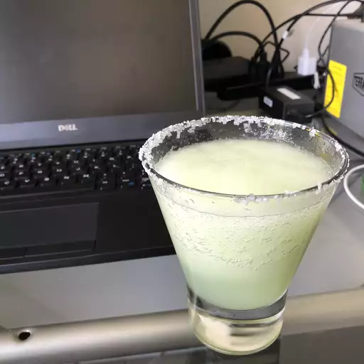

Margarita

A chilly margarita, perfect for a hotday. Stay Frosty.
Who doesn't enjoy a proper margarita? A quick,
and easy way to enjoy your favorite summertime alcoholic
beverage. Drink responisbly.
Ingredients
- 4 cups crushed ice, or as needed
- 6 fluid ounces of cuantro
- 6 fluid ounces of tequila of your choice
- 2 fluid ounces of triple sec
Steps
- Pour ice into blender,pour ingredients over ice
- Blend until smooth
- Pour carefully into margarita glass or cup of choice
- Garnish glass with salt if so inclined
- Enjoy responisbly